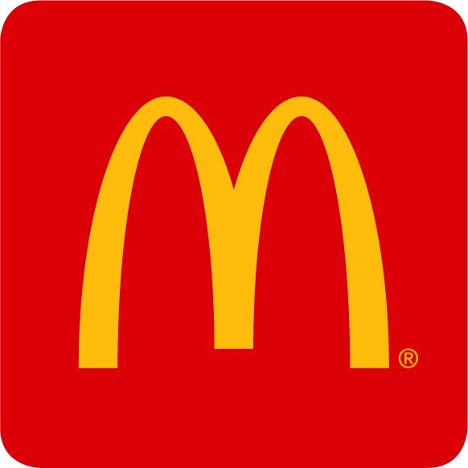
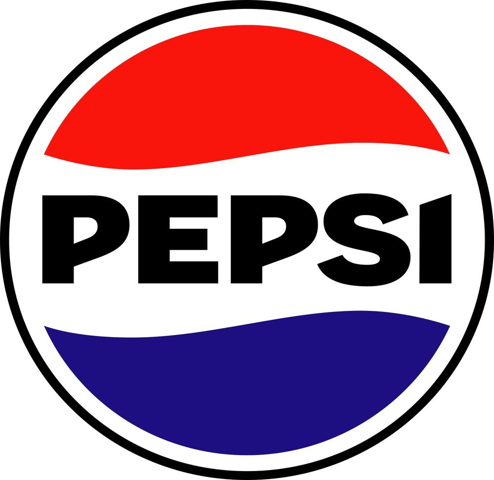
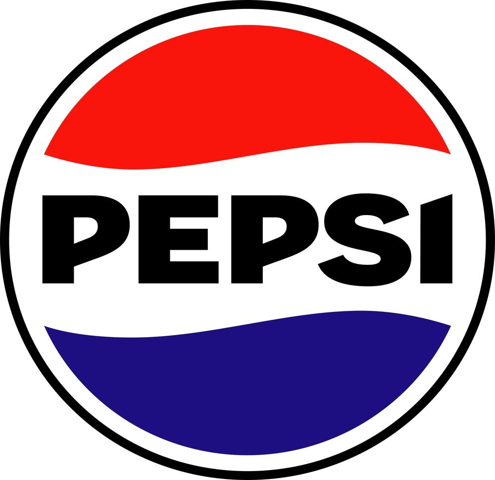
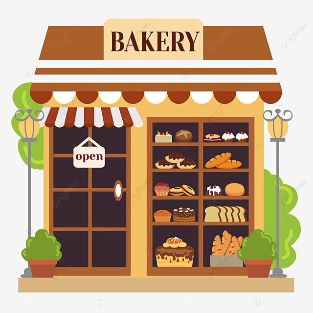
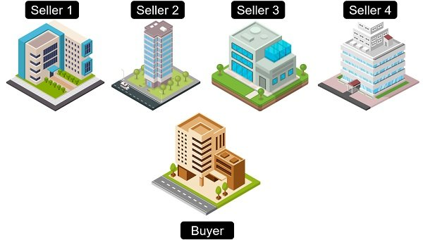

Pamilihan
- Tumutukoy kung saan nakakamit ng mga mamimili ang sagot sa kanilang mga katanungan at pangangailangan.
Tatlong Elemento ng Pamilihan:
1. Mamimili
2. Prodyuser
3. Konsyumer
Pagkakaiba sa Anyo ng Pamilihan
- Bilang at laki ng prodyuser o konsumer
- Uri ng produkto o serbisyo
- Kontrol sa presyo
- Kontrol sa pagpasok sa pamilihan
- Paggamit ng di-presyong kompetisyon.
Uri ng Pamilihan
- Lokal
- Panrelihiyon
- Pambansa
- Pandaigdaigan
Estruktura
Ganap na kompetisyon
Di-Ganap na kompetisyon
a. Monopolyo
b. Monopolistikong Kompetisyon
c. Oligapolyo
d. Monopsonyo
Ganap na Kompetisyon
Ang ganap na kompetisyon ay isang kalagayan ng pamilihan kung saan napakarami ang kalahok na prodyuser at konsyumer. Dahil sa dami ng kalahok, walang sinuman ang may kakayahang kontrolin ang presyo. Ang presyo ng produkto ay awtomatikong itinatakda ng pamilihan sa pamamagitan ng ugnayan ng demand at suplay.
- Napakaraming kalahok sa pamilihan kaya’t walang iisang kompanya ang makakakontrol sa presyo ng produkto.
- Ang mga produkto ay halos pare-pareho, tulad ng bigas, asukal, at gulay, kaya’t hindi mahalaga ang tatak o brand.
- Ang mga prodyuser ay sumusunod lamang sa presyong itinatakda ng merkado. Hindi sila maaaring magtakda ng sariling presyo.
- Walang hadlang sa sinumang nais magsimula o tumigil ng negosyo.
- Ang merkado ang siyang nagtatakda ng presyo batay sa interaksyon ng demand at suplay.
Di-Ganap na Kompetisyon
Sa di-ganap na kompetisyon, mayroong hindi pagkakapantay-pantay sa bilang ng kalahok, uri ng produkto, at antas ng kontrol sa presyo. May mga pagkakataon na iisa lamang ang prodyuser, kakaunti ang kalahok, o kaya’y may malawakang pag-aanunsyo upang makuha ang atensyon ng konsyumer.
A. Monopolyo
")
- Tanging isang kompanya lamang ang gumagawa at nagbebenta ng produkto o serbisyo.
- Kadalasan, walang kahalintulad na produkto na maaaring pamalit dito, tulad ng tubig o kuryente mula sa pangunahing kumpanya.
- Ang kompanya mismo ang nagtatakda ng presyo dahil sila lamang ang pinagkukunan ng produkto.
- Mataas ang hadlang sa pagpasok ng bagong negosyo, maaaring dahil sa malalaking puhunan o regulasyon ng pamahalaan.
- Maaring gamitin upang lalo pang palakasin ang kanilang impluwensya o hindi na kailangan kung wala naman silang katunggali.
B. Oligopolyo

") 

- Limitado lamang ang bilang ng kompanya sa isang industriya, tulad ng industriya ng langis o telekomunikasyon.
- Maaaring halos pareho (tulad ng gasolina) o may kaunting pagkakaiba (tulad ng softdrinks).
- Malaki ang impluwensya ng bawat kompanya sa presyo ng produkto, at madalas ay nakikialam sa galaw ng iba.
- Kadalasan ay nangangailangan ng malaking kapital at teknolohiya upang makapasok.
- May mga pagkakataon na nagkakasundo ang mga kompanya upang kontrolin ang presyo at hindi bumaba ang kanilang kita.
C. Monopolistikong Kompetisyon

")
- Hindi kasing dami ng sa ganap na kompetisyon, ngunit hindi rin kakaunti tulad ng oligopolyo.
- Bagama’t halos pareho ang gamit ng produkto, binibigyan ito ng kakaibang tatak, disenyo, o kalidad upang maging kaiba sa iba.
- Matindi ang kumpetisyon lalo na sa pag-aanunsyo at promosyon.
- May kakayahan ang mga prodyuser na magtakda ng bahagyang mas mataas na presyo batay sa kalidad o tatak ng kanilang produkto.
- Hindi gaanong mataas ang hadlang sa pagpasok ng bagong negosyo.
D. Monopsonyo

- Tanging isang malaking mamimili ang bumibili mula sa maraming prodyuser.
- Dahil iisa lang ang bumibili, napipilitan ang mga prodyuser na ibenta ang kanilang produkto sa presyong dikta ng konsyumer.
- Ang konsyumer ang may malaking impluwensya sa presyo at dami ng produktong bibilhin.
- Halimbawa: Pamahalaan na siyang bumibili ng armas o suplay para sa mga proyektong pambansa.